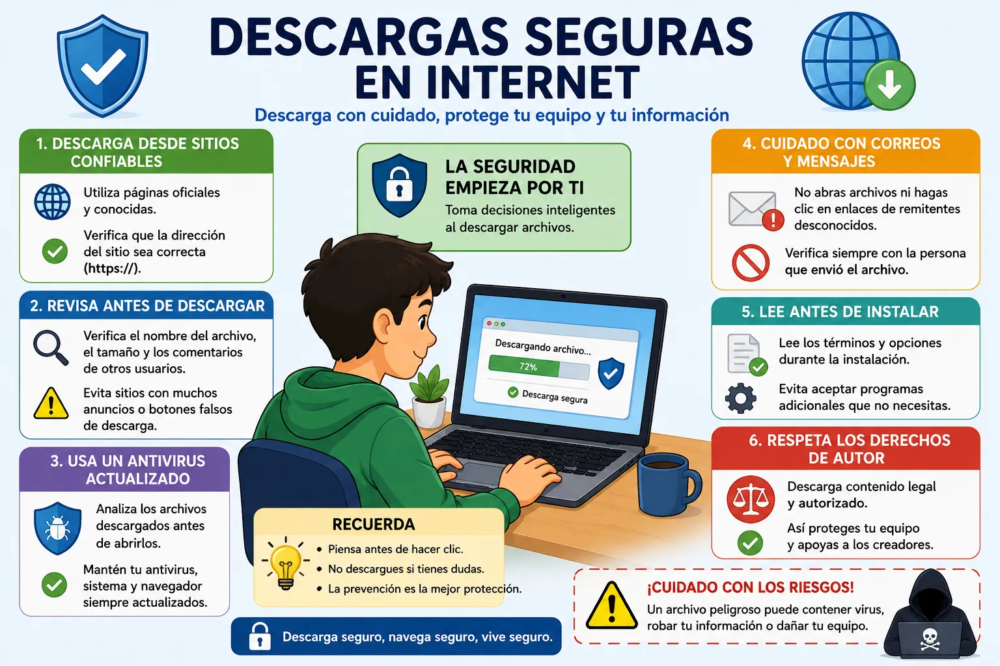
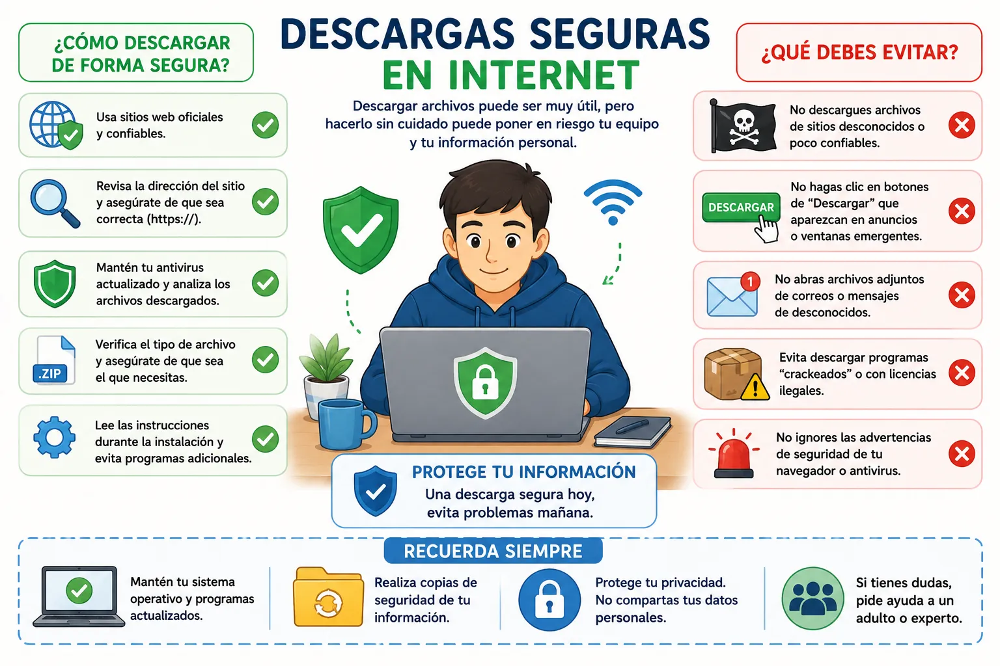

ARTÍCULO TÉCNICO
Descargas seguras en internet

Las descargas en internet forman parte de las actividades que realizamos todos los días. Muchas personas descargan documentos, imágenes, videos, programas, aplicaciones, música y diferentes archivos para estudiar, trabajar o entretenerse. Sin embargo, no todas las páginas de internet son seguras, por lo que es importante tener cuidado antes de descargar cualquier archivo. En algunos casos, un archivo puede contener virus o programas que afectan el funcionamiento del computador y ponen en riesgo la información personal del usuario.
Uno de los principales riesgos al descargar archivos es hacerlo desde páginas desconocidas o poco confiables. Algunos sitios ofrecen programas gratuitos, pero durante la instalación también incluyen aplicaciones que el usuario no necesita o que pueden cambiar la configuración del computador sin permiso. Por esta razón, siempre es recomendable descargar programas desde las páginas oficiales de sus desarrolladores o desde plataformas reconocidas que ofrezcan mayor seguridad.
También es importante prestar atención a los enlaces de descarga. En algunas páginas aparecen muchos botones con la palabra "Descargar", pero no todos corresponden al archivo que realmente necesitamos. Algunos pueden dirigir a publicidad o iniciar la descarga de programas diferentes. Antes de hacer clic, es recomendable leer con atención la información de la página y verificar que se trate del enlace correcto.
Otra medida de seguridad consiste en mantener actualizado el antivirus del computador. Después de descargar un archivo, es recomendable analizarlo con el antivirus antes de abrirlo. De esta manera, si el archivo presenta alguna amenaza, podrá ser detectada antes de afectar el equipo. Además, mantener actualizado el sistema operativo y el navegador ayuda a corregir fallas de seguridad que podrían ser aprovechadas por personas malintencionadas.
Los archivos que llegan por correo electrónico o aplicaciones de mensajería también requieren precaución. No es recomendable abrir documentos o enlaces enviados por personas desconocidas o por contactos que envían mensajes extraños. En ocasiones, los delincuentes utilizan cuentas comprometidas para enviar archivos maliciosos que aparentan ser documentos normales. Si existe alguna duda sobre el archivo recibido, lo mejor es confirmar primero con la persona que lo envió.
Las descargas seguras también dependen del comportamiento del usuario. Es importante leer la información antes de instalar cualquier programa y evitar aceptar permisos innecesarios durante la instalación. Muchas personas hacen clic rápidamente en el botón "Siguiente" sin revisar las opciones disponibles, lo que puede provocar la instalación de programas adicionales que no eran necesarios. Leer cuidadosamente cada paso ayuda a evitar este tipo de situaciones.
Otro aspecto importante es respetar los derechos de autor y utilizar contenido obtenido de forma legal. Descargar programas, películas, música o videojuegos desde sitios ilegales aumenta el riesgo de encontrar archivos infectados y también puede generar problemas relacionados con la seguridad y el uso indebido de la información. Siempre es preferible utilizar páginas oficiales o servicios autorizados para obtener los archivos que necesitamos.
En conclusión, realizar descargas seguras en internet es una práctica que ayuda a proteger tanto los dispositivos como la información personal. Descargar únicamente desde páginas confiables, revisar los enlaces antes de hacer clic, utilizar un antivirus actualizado y mantener buenos hábitos de navegación son acciones sencillas que reducen considerablemente los riesgos. La prevención y el cuidado al momento de descargar archivos permiten disfrutar de internet de una forma mucho más segura y responsable.
